Line Enhancements
The game tells you little about how a line is doing: who waits at which stop, whether it has enough vehicles, what slows it down, and what it costs once upkeep is counted. Line Enhancements puts those figures in the Line Manager, the line window and the statistics window, and adds tools to set terminals, spread deliveries and see where cargo is wanted.

Every feature has its own Off / On switch in the mod's Settings (the gear next to the mod when you choose a game's mods), all On to start with.
The game keeps no history per vehicle or stop, so the mod records departures, loads, arrivals and delays while the game runs and keeps them in your save. Figures appear after the vehicles' next departures and grow more reliable over a game year. Removing the mod leaves an unused table in the save.
Station window
Assign Lines
Setting: Assign Lines · On by default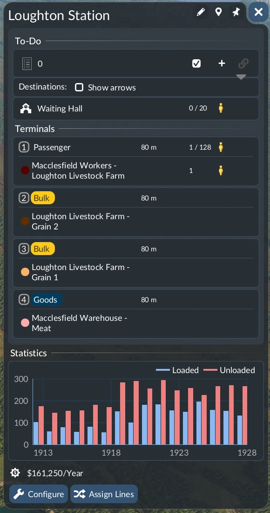
- 1Assign Lines, next to the game's Configure button.

- 1Switches between the list and the grid.
- 2Each terminal is a card with its type and length, the lines that prefer it first.
- 3An alternative, greyed under the separator; the ✕ removes it.
- 4Drag a line by its grip to another terminal to make that its preferred one.
- 5Drag this handle to another terminal to add it as an alternative.
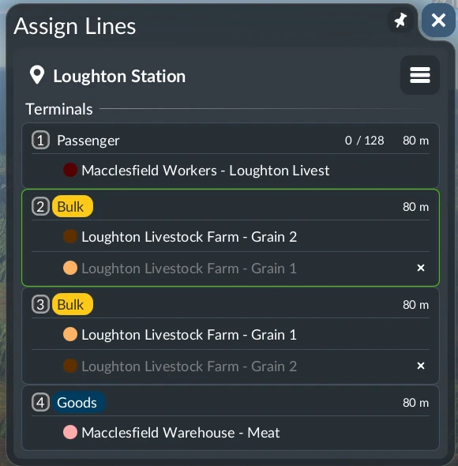
- 1The terminal under the pointer lights green while you drag.
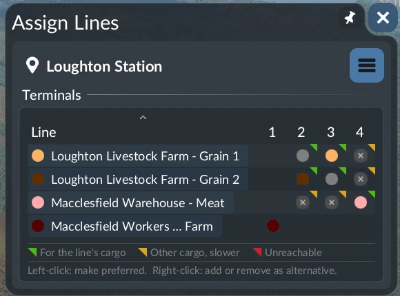
- 1Corner flags: green made for the line's cargo, yellow other cargo (slower), red unreachable.
- 2Grain 1 prefers terminal 3 (its colour), has terminal 2 as an alternative (grey) and doesn't use terminal 4 (✕).
- 3Left-click a cell to make it preferred, right-click to add or remove an alternative.
Why
The game sets terminals one line and one stop at a time, in the Line Manager's stop popover. To see which lines use which terminal of a busy station, you open each line in turn.
What it does
An Assign Lines button next to Configure in the station window opens a window with the station's terminals and the lines that stop there. Drag a line to another terminal to make it the preferred one, or add terminals as alternatives. A grid view shows every line against every terminal.
How to use
- Open a station's window and click Assign Lines at the bottom.
- List view: drag a line by its grip onto another terminal to make it preferred, or drag the handle at the right of its row to add that terminal as an alternative.
- Grid view (the button at the top right): left-click a cell to make that terminal preferred, right-click to add or remove it as an alternative.
Good to know
- Alternatives are listed greyed under a separator; the ✕ stops the line using that terminal.
- Colours show how a terminal suits a line: green made for its cargo, yellow made for other cargo (usable, unloads slower), red the line's trains can't reach it over the track.
- Passenger lines can't use cargo-only terminals, and the other way round.
- A change is the same as setting it in the Line Manager's stop popover. Click a line's name to open its line window.
Also in
The statistics window's Stations tab gets an Assign Lines button at the right of each Lines cell.
Line Manager: stops and loading
Distribute Delivery
Setting: Distribute Delivery · On by default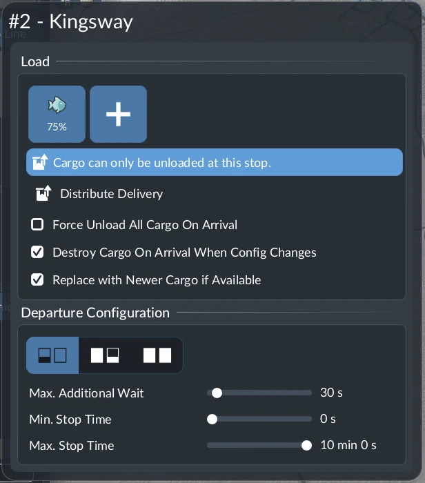
- 1Fish 75 %: vehicles leave this stop with up to three quarters of a load, so a quarter is delivered here.
- 2Distribute Delivery: point at it for the plan, click to apply it.
Why
A delivery line that drops cargo at several stops unloads everything at the first stop that takes it. To share the cargo out down the line, you set a fill level at each stop by hand.
What it does
A Distribute Delivery button in the Load card of a stop's window. For each cargo the stop loads, it gives the following stops that accept that cargo decreasing fill levels, up to the next stop that loads it again, and the last of them none, so the rest is delivered there.
How to use
- In the Line Manager, open the window of the stop where the cargo is loaded.
- Point at Distribute Delivery in its Load card to see the plan, then click it.
Good to know
- After a full pickup and three stops that take the cargo, they get 67 %, 33 % and none.
- It only sets fill levels; you can change any of them afterwards in each stop's Load card.
Waiting at Stops
Setting: Waiting at Stops · On by default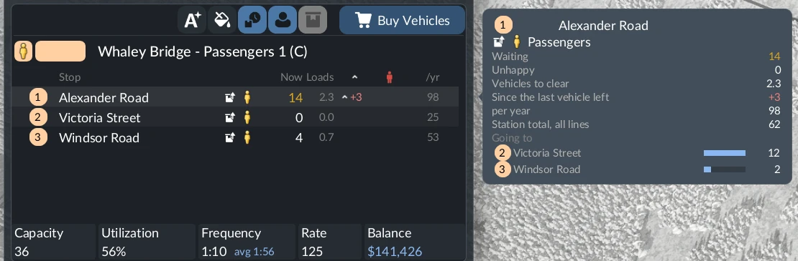
- 1The Figures toggle switches between the stop list and this table.
- 2Now: 14 passengers wait here for this line, yellow because that is over one vehicle load.
- 3Loads: 2.3 vehicle loads; the arrow and +3 are the change since the last vehicle left.
- 4Unhappy passengers (red figure) and arrivals a year (98).
- 5The stop's card: waiting, unhappy, vehicles to clear, the station's total and where its passengers want to go.

- 1This stop loads from stocks: 16 of 500 in reach, 2.7 vehicle loads, 179 coming in a year.
- 2The delivery stop: the buildings in reach hold 37 fish of the 128 they can take.
- 338 of the 60 buildings in reach that take fish are empty.
Why
The game shows who waits for a line only in the station window's terminal cards. The waiting figures elsewhere add up every line at the station, and the Line Manager's stop list shows only each stop's cargo settings.
What it does
A toggle at the end of the Line Manager's action bar (cargo and clock icon) turns the selected line's stop list into a Figures view: one row per stop and cargo with what waits there for this line, the vehicle loads that makes, the change since the last vehicle left, the unhappy passengers and the arrivals a year. Point at a stop's rows for a card with everything about it.
Good to know
- The waiting figure is yellow over one vehicle load and red over three.
- A stop that loads from industries' or warehouses' stocks shows their stock and what comes in a year. A delivery stop shows what the buildings and industries in reach hold of the cargo and can take, red when empty.
- The stop card lists where the passengers want to go and the station's total for all lines.
- The view stays on for every line until you switch it off. While you add or move stops, the normal stop list shows.
Passengers on All Stops
Setting: Passengers on All Stops · On by default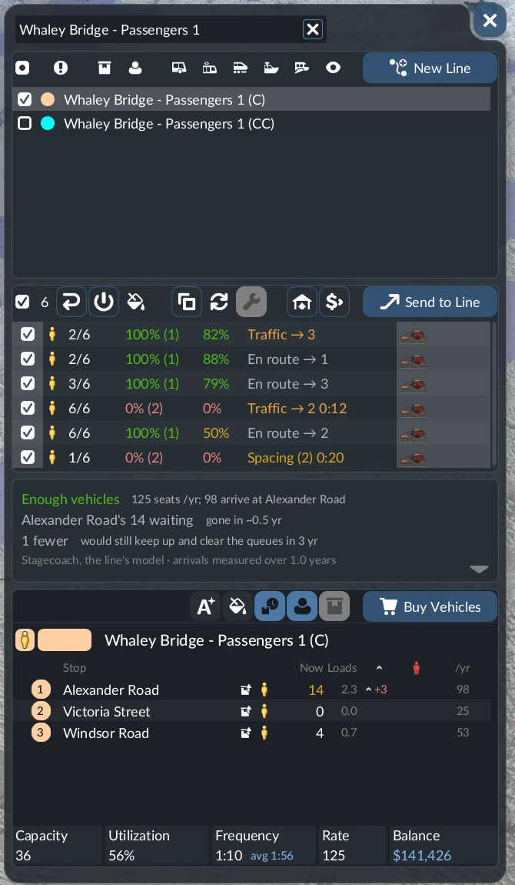
- 1Passengers on All Stops, pressed: a stop of this line loads passengers.
- 2Remove Cargo from All Stops, greyed: no stop of this line loads cargo.
Why
Adding passengers to a line, or taking them off, means changing every stop.
What it does
A button next to Set Line Color in the Line Manager. It is pressed while any stop of the selected lines loads passengers: click it to take them off every stop. Click it again to add them at every stop that allows passengers.
Good to know
- With several lines selected it asks first.
- It sets the same thing as the game's own passenger button on each stop row.
Remove Cargo from All Stops
Setting: Remove Cargo from All Stops · On by defaultWhy
Turning a line into a passenger-only line means removing each cargo from each stop by hand.
What it does
A cargo button after the passenger button in the Line Manager. It is pressed while any stop of the selected lines loads cargo; click it to take every cargo but passengers off every stop.
Good to know
- Fill levels are kept.
- It only removes cargo; to add some, use a stop's Load card.
- With several lines selected it asks first.
Line Manager: vehicles
Vehicle Load and Status
Setting: Vehicle Load and Status · On by defaultTwo bus lines with six vehicles each, in two saves; the game's list shows names, the mod's what each vehicle is doing.
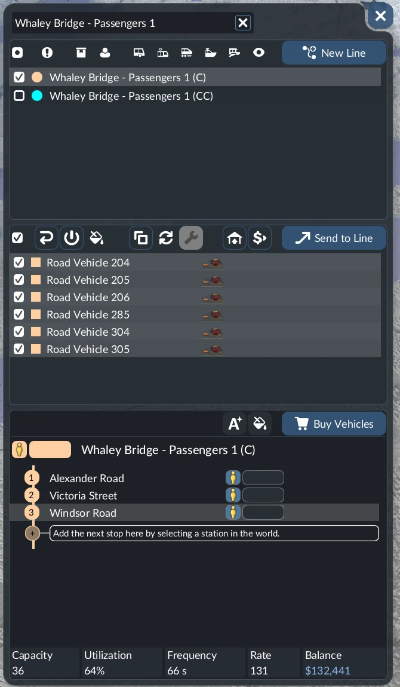
- 1The game lists each vehicle by name.
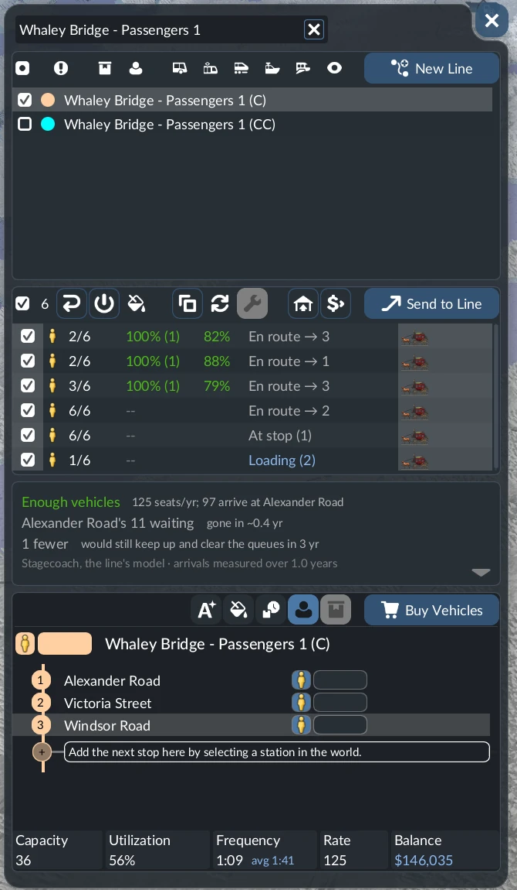
- 12/6: the load now.
- 2100% (1): the fullest of its last 20 departures, from stop 1.
- 388%: its average fill when leaving a stop.
- 4What it is doing: on its way to stop 1. Delays such as Traffic show in orange.
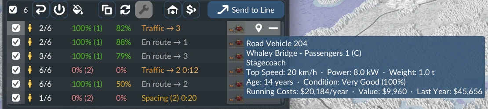
- 16: the vehicles selected (Selected Vehicle Count).
- 2The vehicle's details: line, model, top speed, power, weight, age, condition, running costs, value and last year.
- 3A status with how long: spacing out at stop 2 for 0:20.
Why
The Line Manager lists each vehicle by name. Whether it runs full or empty, where it is and why it is late takes its own window.
What it does
Each vehicle in the Line Manager's list shows its load now, its fullest departure of the last 20 with the stop's number, its average fill when leaving a stop, and what it is doing and where, with how long: 'Loading (4)', 'En route → 4', circling an airport, waiting to take off, at a signal or for a full terminal, in traffic, spacing out.
Good to know
- Average fill is green from 67 %, yellow from 33 %, red below.
- A low average can hide one stop that needs the whole vehicle; the fullest departure shows it.
- The line colour and name columns make room; the name is in the tooltip. Point at a vehicle's picture for its details.
Also in
The line window's Vehicles card shows the same as columns you can sort, largest first, with a locate pin and the vehicle's picture, which opens its window.
Vehicles Needed
Setting: Vehicles Needed · On by default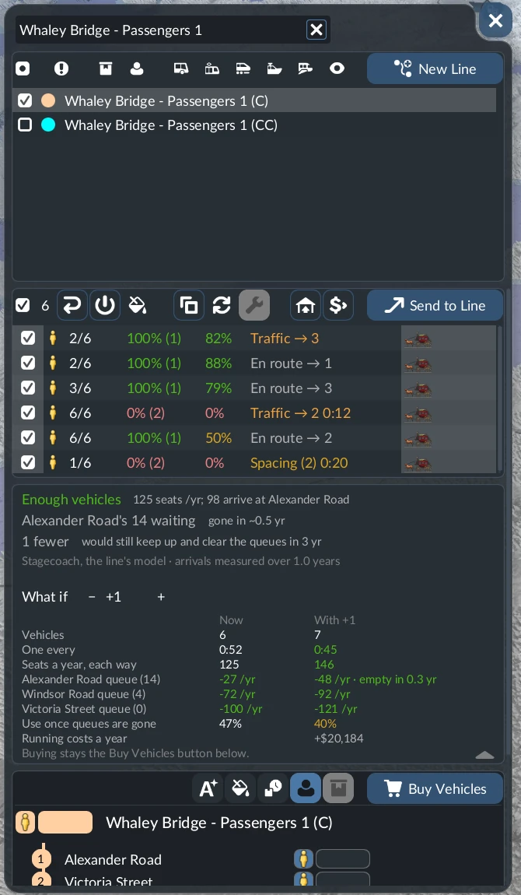
- 1Enough vehicles: 125 seats a year cover the 97 passengers arriving at the busiest stop.
- 2The queue at Alexander Road, 11, would be gone in under half a year.
- 3One vehicle fewer would still keep up and clear the queues within 3 years.
- 4What if: add or remove vehicles of the line's model.
- 5Now against one more: interval, seats, each stop's queue, use and running costs.
Why
The game gives a line's Rate, the seats it offers a year, but not how many passengers or how much cargo arrive. So you guess how many vehicles a line needs.
What it does
A card under the Line Manager's vehicle list measures how much arrives at each stop a year and compares it with the seats the line offers: '+3 to keep up', '+5 to clear the queues' (empty today's queues within 3 years), 'Enough vehicles', or how many fewer would still keep up.
How to use
- Select one line in the Line Manager and read the card under its vehicle list.
- Open it with the arrow at its bottom right, then add or remove vehicles in the what-if.
Good to know
- The what-if uses the line's own vehicle model and shows the interval, seats, each stop's queue (growing or shrinking, empty when), use and running costs before and after.
- Arrivals need a quarter of a game year of play before the card answers.
- Buying stays the Buy Vehicles button.
Selected Vehicle Count
Setting: Selected Vehicle Count · On by defaultWhy
With a long vehicle list, the select-all box doesn't say how many vehicles you are about to send to a depot, sell or replace.
What it does
The Line Manager's vehicle list shows how many of its vehicles are selected, as a number between the select-all box and the Reverse button; the tooltip adds how many are listed.
Good to know
- Reverse, Start / Stop and Set Color sit a little further right to make room.
Send to Line Remembers Filter
Setting: Send to Line Remembers Filter · On by default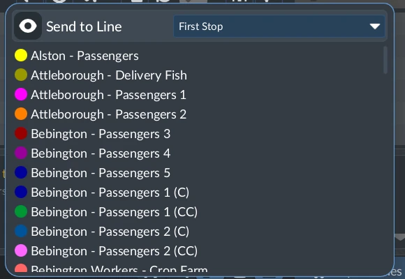
- 1Show Only Visible Lines opens as you last left it.
Why
The Send to Line popover doesn't remember Show Only Visible Lines between openings, so moving several vehicles means setting it each time.
What it does
The Send to Line popover, from the vehicle window or the Line Manager, opens with Show Only Visible Lines the way you last left it, for the rest of the session.
Line Manager: names and filters
Destination - Cargo Names
Setting: Destination - Cargo Names · On by default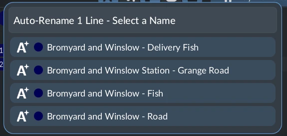
- 1The mod's suggestion, first: the town it delivers to and the cargo.
- 2The game's own suggestions follow, among them 'Town - Cargo'.
Why
The game's Auto-Rename names a cargo line after a town and its cargo, such as 'Bromyard and Winslow - Fish', which doesn't say where the cargo goes or who it is for.
What it does
Auto-Rename in the Line Manager gets a 'Destination - Cargo' suggestion, first in the list: a cargo line is named after the place it delivers to and the cargo it brings there, such as 'Colchester Steel Mill - Iron Ore' or 'Colchester Warehouse - Coal'.
Good to know
- A line taking cargo from warehouses out to a town's stops, the last leg of its delivery, becomes for example 'Culver City - Delivery Food'.
- A passenger line to an industry with workplaces becomes for example 'Colchester Workers - Steel Mill'.
- Other lines get the game's 'Town - Cargo' name.
Passenger and Cargo Filter
Setting: Passenger and Cargo Filter · On by defaultWhy
Older game builds list passenger and cargo lines together in the Line Manager, with no way to show only one kind.
What it does
A passenger and a cargo button after the eye in the Line Manager's list. Both start pressed and every line is listed; let one up to hide those lines. The select-all box then selects only the listed lines, and the map shows only them and their vehicles.
Good to know
- A line carrying both is listed while either button is pressed; with both up, no line is listed.
- Game build 40444 and later have their own cargo and passenger buttons in the Line Manager, so on those builds this filter turns itself off.
Line Manager: on the map
District Colors in Line Manager
Setting: District Colors in Line Manager · On by default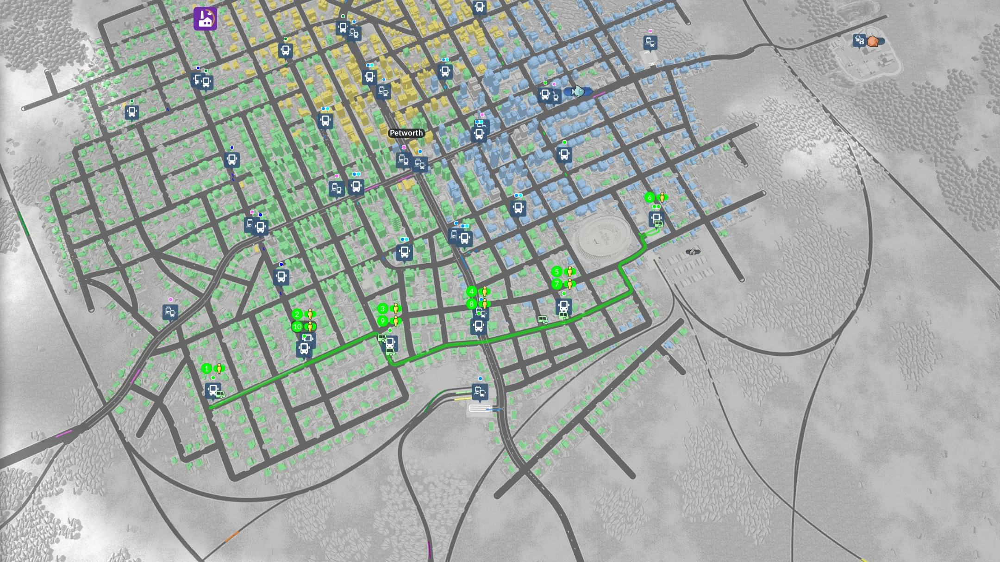
- 1Industrial: yellow.
- 2Commercial: blue.
- 3Residential: green.
Why
The game colours town buildings by district only while you add or move a line's stops. In the Line Manager's other views you can't see where homes, shops and workplaces are.
What it does
Town buildings keep their district colours (residential, commercial, industrial) in every view of the Line Manager, so you can see where people live, shop and work while you plan where a line should stop.
Selected Line's Catchment
Setting: Selected Line's Catchment · On by default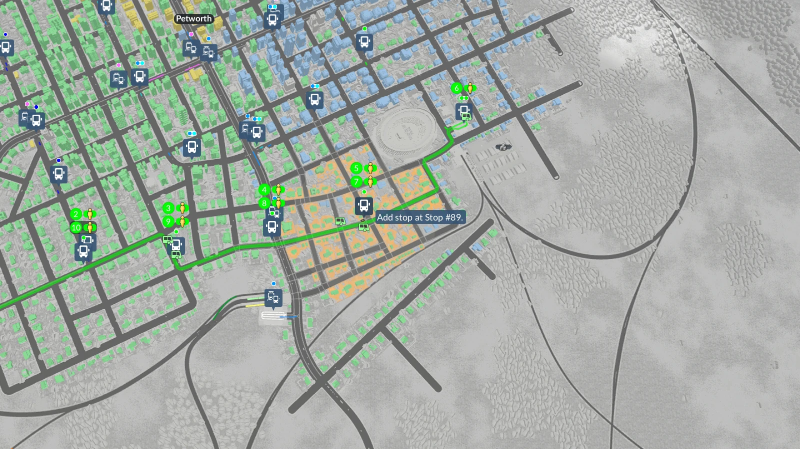
- 1The pointer on Stop #89 while adding a stop.
- 2The lots this stop reaches, orange over the district colours.
Why
Planning a stop means guessing which homes, shops and workplaces it would reach.
What it does
Select one line in the Line Manager, or edit its stops, and point at one of its stops or at any station on the map, also while adding a stop: the town lots that station reaches turn orange.
Good to know
- With several lines selected, or in Send to Line, the map is as usual.
Cargo Demand
Setting: Cargo Demand · On by default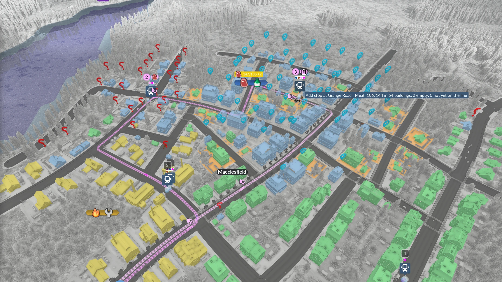
- 1Blue pins: buildings taking meat that Grange Road reaches.
- 2Red ?: buildings taking meat that no stop reaches.
- 3The district's chip: stored / capacity of its reached buildings, and +2 not reached.
- 4The add stop tooltip sums up what this station reaches.
- 5Orange: the lots the station reaches (Selected Line's Catchment).
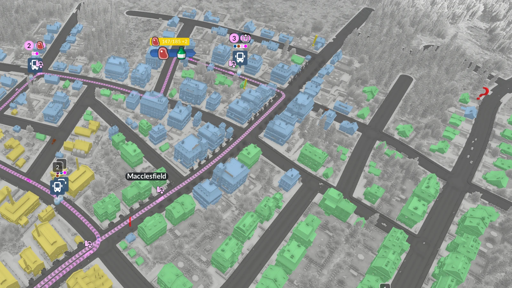
- 1147/185 +2: the district's reached buildings store 147 meat of 185, and 2 more take meat but no stop reaches them.
- 2A yellow !: a building your stops reach that holds no meat.
- 3A red ?: a building taking meat that no stop reaches.
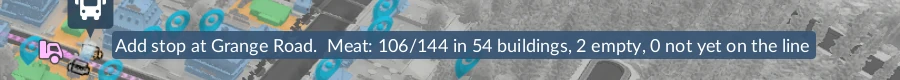
- 1What the station reaches: meat stored / capacity, buildings, empty ones and those no stop of the line reaches yet.
Why
Town buildings take cargo such as food or goods only from stops that reach them. The game doesn't show which buildings want your line's cargo, which of them your stops reach and which run empty.
What it does
Select one or more cargo lines in the Line Manager (lines carrying the same cargo count together), or edit a line's stops. Over the buildings that take the cargo, a yellow ! marks those your stops reach that hold none of it, and a red ? those in the line's towns that no stop reaches. Each district gets a chip with what its reached buildings store against what they can take.
How to use
- Select a cargo line in the Line Manager, or add a stop to one.
- Point at a station to see what it alone serves: a blue pin on every building taking the cargo that it reaches, a red ? on every other one.
Good to know
- The district chip reads stored / capacity, red when empty, yellow part full, green full; +n counts buildings that take the cargo but no stop reaches.
- The add stop, move stop and create line tooltips add what the station reaches, for example 'Vegetables: 7/24 in 9 buildings, 3 empty, 3 not yet on the line'.
- The ! and ? also show while the line's own window is open.
- The marks are small; zoom in to find them.
Descent Zones
Setting: Descent Zones · On by default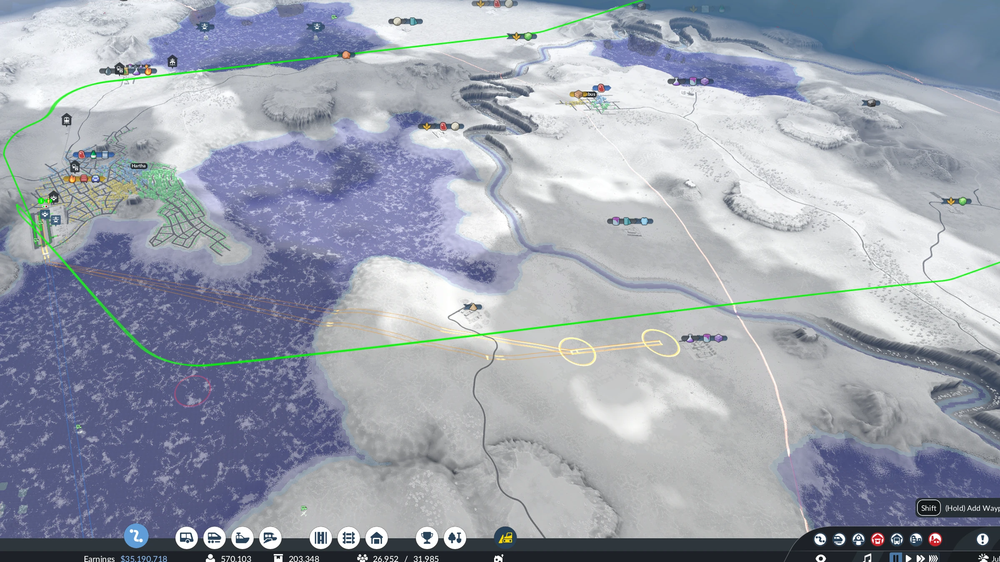
- 1The blue strip along the runway's approach line.
- 2A waypoint the planes skip, marked red.
- 3The straight paths planes fly once they descend, for the earliest and the latest start.
- 4Where those paths start.
- 5The edge of the descent circle: inside it, planes skip the waypoints left.
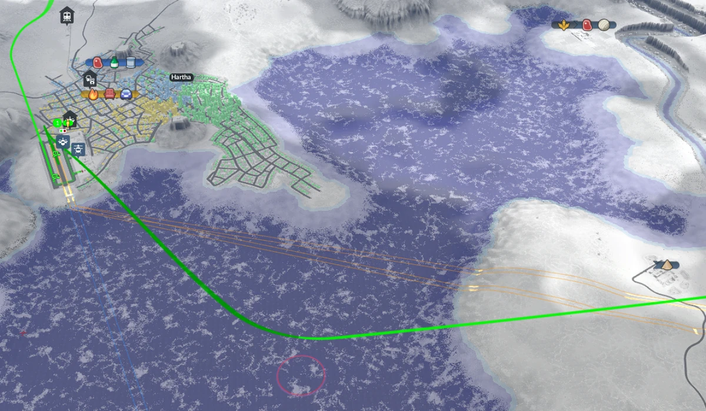
- 1The runway the planes land on.
- 2The straight-in paths meeting the runway's end.
- 3The approach strip: a last waypoint on this line is kept.
- 4The skipped waypoint.
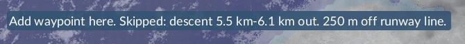
- 1Adding a waypoint: planes would skip it, since they start descending 5.5 to 6.1 km out, and it lies 250 m off the runway line.
Why
Planes skip waypoints close to the airport they fly to. Once the flight still to go is about ten times their height, they start descending and fly straight to the runway, dropping the waypoints left. The game shows none of this, so a waypoint placed there seems to be ignored.
What it does
Select one air line in the Line Manager and each airport it lands at shows a red circle where the descent starts (ten times its planes' cruise height), the straight paths planes then fly to the runway for the earliest and the latest start, and a blue strip along the runway's approach line. Waypoints all planes skip get a red mark, those only some planes skip an orange one.
Good to know
- While you add or move a waypoint, its tooltip says whether planes landing at that leg's airport will skip it and how far it is from the runway line.
- Waypoints after takeoff are always flown.
- The circle is large: at a normal zoom only part of its edge is in view, as a faint line.
Line window and vehicle window
Line Cost Cards
Setting: Line Cost Cards · On by defaultThe same bus line's window in two saves of one world, so the figures differ.
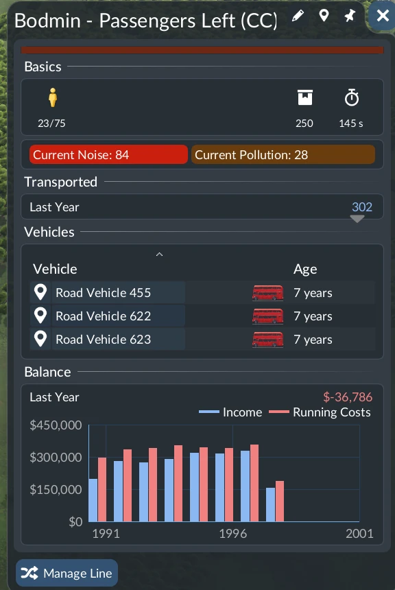
- 1Vehicles by name and age.
- 2Balance: income and the vehicles' running costs only.
- 3Manage Line with the crossed arrows.
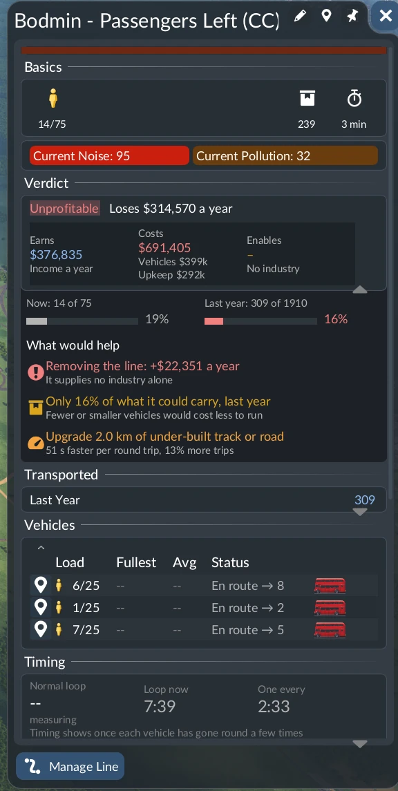
- 1Verdict: Unprofitable, losing $314,570 a year once all upkeep is counted.
- 2Vehicles: load, fullest departure, average and status (Vehicle Load and Status).
- 3Timing (Line Timing), still measuring here.
- 4Manage Line with the Line Manager icon (Manage Line Buttons).
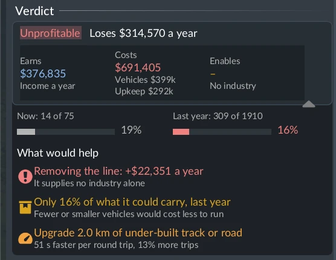
- 1The verdict and what the line loses a year with all its costs.
- 2Earns, Costs (vehicles and upkeep) and Enables.
- 3Use now (14 of 75 places) and last year (309 carried of 1,910 it could carry).
- 4What would help, with what each change is worth.
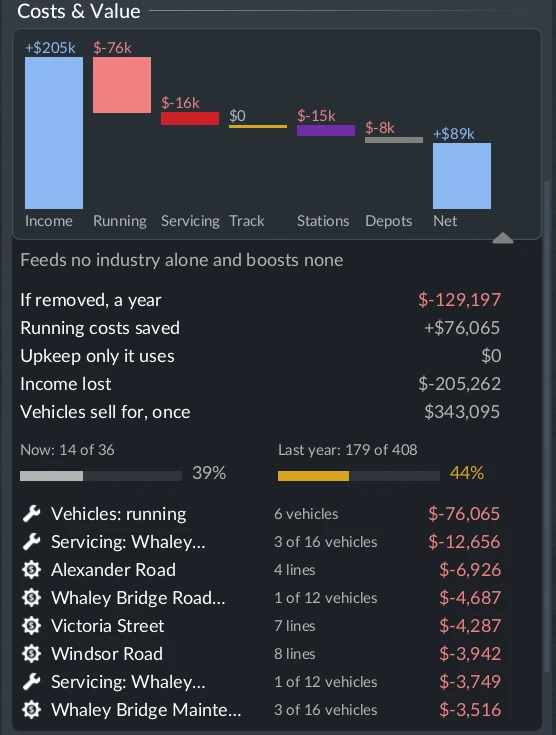
- 1The waterfall: income, then each cost, down to the net.
- 2If removed: running costs saved, upkeep only this line uses, income lost and what its vehicles sell for.
- 3Every cost, largest first, with the line's share: 2 of 11 vehicles serviced, a station used by 4 lines.
Why
The line window's Balance counts only income and the vehicles' running costs. Servicing and the upkeep of track, stations and depots are left out, so a line can look profitable while it loses money.
What it does
Two cards in the line window. Verdict: Profitable, Feeder or Unprofitable with the reason, and what the line earns, costs with all upkeep and enables; open it for usage and what would help. Costs & Value: a waterfall from income to the net; open it for what the line enables, what removing it would change, and every cost.
Good to know
- Enables: the lines carrying the output of an industry only this line supplies. A line that loses money but enables other lines' income is a Feeder.
- A line's share of upkeep: each track or road piece on its route is split among the lines using it by vehicles passing, a station by stops, a depot by the vehicles it services.
- Figures are worked out a few lines at a time, so they appear shortly after the window opens.
Line Timing
Setting: Line Timing · On by default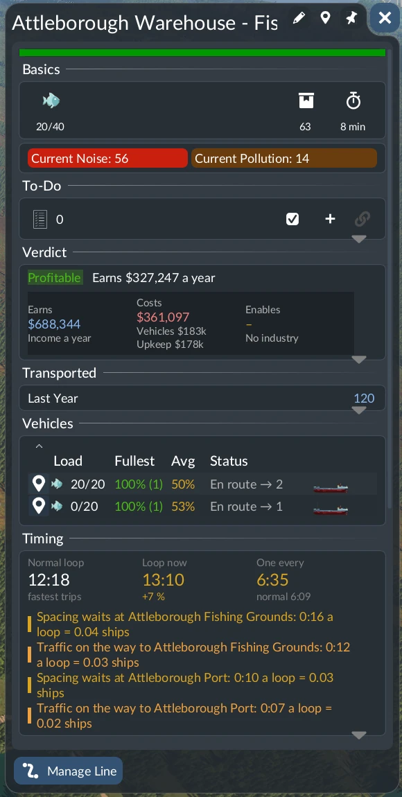
- 1Normal loop: 12:18 on the fastest trips.
- 2Loop now: 13:10, 7 % slower, so yellow.
- 3One every 6:35, against 6:09 normally.
- 4What slows the line, worst first: spacing waits at the fishing grounds cost 0:16 a loop, 0.04 ships.
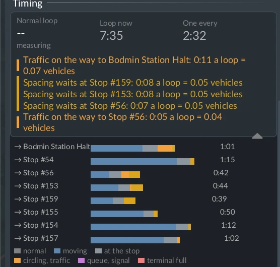
- 1The normal loop is still being measured.
- 2Traffic and spacing waits, each with where, the time a loop and that time in vehicles.
- 3Each leg to the next stop, split into moving, the stop and each delay.
- 4The colours: moving, at the stop, circling or traffic, queue or signal, terminal full.
Why
The Frequency alone can't say whether a line is slow, or why.
What it does
A Timing card in the line window, after Vehicles: the normal loop (one vehicle round all stops on its best trips), the loop now (green, yellow or red against normal) and the frequency with its normal, then what slows the line, worst first, with what it costs in vehicles, such as 'Circling on the way to Hartha Airport: 1:31 a loop = 0.33 aircraft'.
Good to know
- Open the card for each leg's normal time against now, split into moving, the stop and each delay.
- The Line Manager's Frequency gets 'avg m:ss', the average time between departures from the first stop.
- The normal loop shows once each vehicle has gone round a few times.
Manage Line Buttons
Setting: Manage Line Buttons · On by default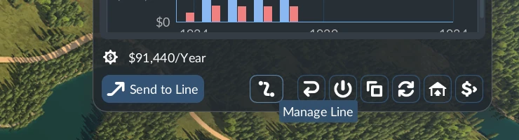
- 1The Line Manager button opens the Line Manager on this ship's line.
Why
To change a vehicle's line in the Line Manager, you first open the line's window, then Manage Line.
What it does
A vehicle's window gets the Line Manager button at the bottom, set apart to the left of Reverse. It opens the Line Manager on the vehicle's line. The line window's Manage Line button shows the same Line Manager icon instead of the crossed arrows.
Good to know
- Vehicles without a line don't get the button.
Statistics window
Line Cost Views
Setting: Line Cost Views · On by defaultThe Lines tab of a save with trucks, trains, ships and planes, in the game and in the mod's Lines view.
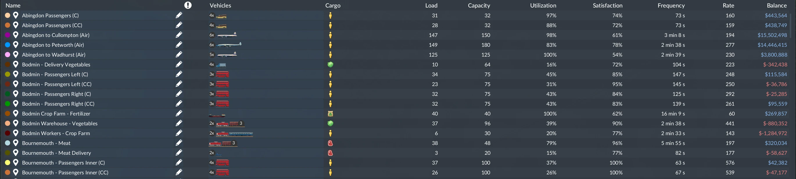
- 1Utilization: the load right now.
- 2Balance: income less the vehicles' running costs, without upkeep.
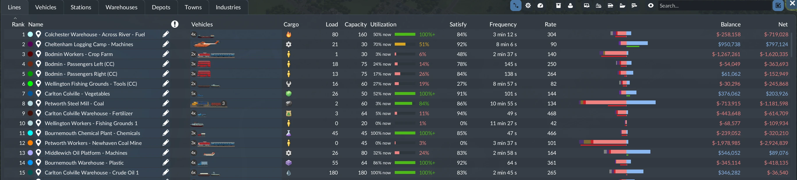
- 1The three views: Lines, Costs and Track.
- 2The load now, then last year's use as a bar: green, yellow or red.
- 3The profit bar: income to the right, each cost to the left, the net as a line under it.
- 4Net: the Balance less the line's share of upkeep.
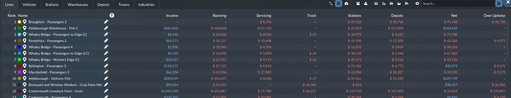
- 1Income and running costs a year.
- 2The line's share of servicing, track, station and depot upkeep.
- 3Net: what is left after every cost.
- 4Own Upkeep: upkeep only this line uses, saved if you remove it.
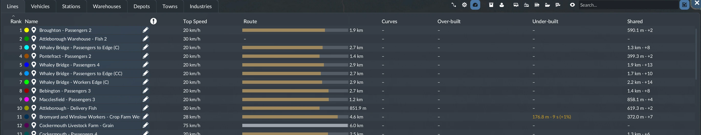
- 1The fastest vehicle's top speed.
- 2The route by track or road type, and its length.
- 3Under-built: 176.8 m of road slower than the line's vehicles, costing 9 s a round trip.
- 4Shared: the length other lines use too, and how many lines (+2).
Why
The statistics window's Lines tab shows Utilization as the load right now and Balance without any upkeep. It can't tell you which lines pay their way, which barely use their vehicles, or where track is over- or under-built.
What it does
Three view buttons in the Lines tab, before the vehicle-type buttons. Lines: last year's use of the Rate as a bar beside the load now, Balance as a profit bar on one scale for all lines, and a Net column with the line's share of upkeep. Costs: every cost in its own column, plus the upkeep only this line uses. Track: the fastest vehicle's top speed, the route by track or road type, and the length held back by curves, over-built, under-built and shared.
Good to know
- Use is green from 70 %, yellow from 40 %, red below.
- Profit bar: income to the right, costs to the left (running, servicing, track and signals, stations, depots), faded where shared with other lines.
- Over-built: a cheaper track would do, with the upkeep it would save. Under-built: with the time lost per round trip.
- Income is the Balance plus the vehicles' running costs a year, so a line whose vehicles were bought during the year reads high. A line that lost vehicles during the year can read '100%+' use.
- A line's share of upkeep: each track or road piece is split among the lines using it by vehicles passing, a station by stops, a depot by the vehicles it services.
Settings
Choosing a save's mods: the gear next to Line Enhancements → Settings. Each save keeps its own choice. Off turns a feature off completely.
| Setting | Default | What it does |
|---|---|---|
| Assign Lines | On | Assign Lines button in the station window and the statistics window's Stations tab, to set each line's preferred and alternative terminals. |
| Distribute Delivery | On | Distribute Delivery button in the Load card of the Line Manager's stop window. |
| Passengers on All Stops | On | A button next to 'Set Line Color' in the Line Manager adds passengers to every stop of the selected lines, or removes them. |
| Remove Cargo from All Stops | On | A cargo button after the passenger button in the Line Manager removes all cargo from every stop of the selected lines. |
| Destination - Cargo Names | On | Auto-Rename in the Line Manager suggests names like 'Colchester Steel Mill - Iron Ore' or 'Colchester Workers - Steel Mill'. |
| District Colors in Line Manager | On | Town buildings show their district colors (residential, commercial, industrial) in the Line Manager's main view too, as they do while you add or move stops. |
| Selected Line's Catchment | On | With one line selected in the Line Manager, or while you edit its stops, the map shows the catchment area of the stop or station you point at. |
| Cargo Demand | On | With cargo lines selected in the Line Manager (their shared cargo), while you edit a line's stops, or in a line's window: over the buildings that take its cargo a yellow ! where its stops reach them and none is stored, a red ? where no stop reaches them, and while you point at a station blue pins on those it reaches and a red ? on all others, a stored / capacity chip per town district (+n buildings no stop reaches), and what a station reaches in the add stop tooltip. |
| Descent Zones | On | With an air line selected in the Line Manager, each airport it lands at shows the circle where its planes start descending and skip waypoints, the straight path they then fly and the runway's approach line; skipped waypoints get a dot, and the waypoint tooltips warn about it. |
| Vehicle Load and Status | On | Each vehicle in the Line Manager's vehicle list (in place of the line colour and name columns) and the line window's Vehicles card (as sortable columns) shows its load now, its fullest departure with the stop, its average departure fill and what it is doing (loading, circling, waiting at a signal, in traffic). |
| Waiting at Stops | On | A toggle in the Line Manager's action bar turns the stop list into a table of figures per stop and cargo: what waits there for the line, vehicle loads, the change since the last vehicle left, unhappy passengers, arrivals a year; at delivery stops, what the buildings in reach hold. Point at a stop for a card with everything about it. |
| Vehicles Needed | On | A card under the Line Manager's vehicle list says how many more vehicles keep up with the arrivals and how many also clear the queues; open it to try adding or removing vehicles. |
| Line Timing | On | A Timing card in the line window compares the normal time round all stops with now, splits the delays by cause and place and names what slows the line; the Line Manager's Frequency gets its average. |
| Selected Vehicle Count | On | The Line Manager's vehicle list shows how many vehicles are selected, beside its select-all box. |
| Line Cost Views | On | Lines, Costs and Track views in the statistics window's Lines tab: usage last year, a profit bar, the line's share of track, station and depot upkeep, and over- or under-built track. |
| Line Cost Cards | On | Verdict and Costs & Value cards in the line window: what the line earns, costs with all upkeep and enables, and what would help. |
| Manage Line Buttons | On | A Line Manager button left of Reverse in the vehicle window opens the Line Manager on the vehicle's line; the line window's Manage Line gets the same icon. |
| Send to Line Remembers Filter | On | The Send to Line popover opens with 'Show Only Visible Lines' as you last left it. |
| Passenger and Cargo Filter | On | Passenger and cargo buttons after the eye in the Line Manager: let one up to hide passenger lines or cargo lines. Game builds before 40444 only: later builds have their own. |
| Logging | Off | Writes the mod's messages to the game log (stdout.txt), for bug reports. |
More
Compatibility
Works alongside Statistics Enhancements, whose Rank and Station columns share the statistics window, and To-Do List, whose card shares the line window. It also runs beside square's Line Manager Plus, whose vehicle details gave the idea for the details on a vehicle's picture.